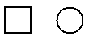

Terms:
Ordinate: The y component of the plotted point
Abcissa: The x component of the plotted point
Origin: The 0,0 point of the graph
Graphing a polynomial
1. Take the P'(x) and P''(x)
2. Set P'(x) to 0, and solve for x values (usually more than one)
3. plug into P(x) to get y values of the extrema
4. Using P(x), make sign chart (i.e. --------0++++++++) to show pos/neg slopes
5. set P''(x) = 0, these are the inflection points
6. PLug in P''(x) values in P''(x) to check the concavity. If P''(x) = 0 the you check the concavity through the first derivative test plotting.
7. Plot some extra points for data.
Circle points to distiguish points from line.

Error bars indicate the error of each point.
centered on a data poin, these indicate the margin of error for the data point.